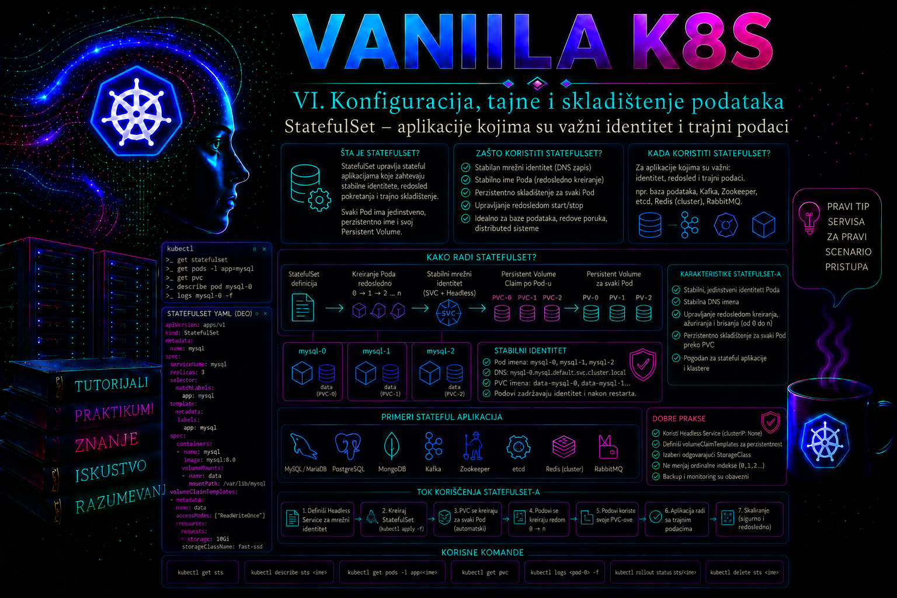

Vanilla Kubernetes

Većina kontejnerskih aplikacija projektovana je tako da pojedinačna instanca može biti uklonjena i zamenjena drugom bez posledica. Deployment je zato pogodan za stateless servise čiji su podovi međusobno zamenljivi. Baze podataka, distribuirani sistemi, brokeri poruka, klasteri za pretragu i aplikacije sa lokalnim trajnim stanjem imaju drugačije zahteve: instanca često mora da zadrži prepoznatljivo ime, stabilnu mrežnu adresu, sopstveni disk i kontrolisan redosled pokretanja ili gašenja. Kubernetes za takve radne terete pruža objekat StatefulSet.
StatefulSet ne pretvara automatski aplikaciju u visoko dostupnu aplikaciju, ne sinhronizuje podatke između replika i ne rešava izbor primarne instance. Njegova uloga je da obezbedi stabilan identitet i determinističko upravljanje podovima. Replikacija, konsenzus, failover, backup i oporavak ostaju odgovornost same aplikacije, njenog operatora ili posebno projektovanog administrativnog postupka.
Zašto stateful aplikacijama nije dovoljan Deployment
Pod kojim upravlja Deployment dobija ime sa promenljivim sufiksom, na primer web-7c98b7f9b5-kp2xm. Kada se pod zameni, nova instanca dobija drugo ime i novi mrežni identitet. Takvo ponašanje je poželjno kada su sve instance iste i kada podaci žive u spoljašnjoj bazi, objekt skladištu ili drugom nezavisnom servisu.
StatefulSet svakoj replici dodeljuje stabilan ordinalni broj. Ako se objekat zove docstore, podovi se nazivaju docstore-0, docstore-1 i docstore-2. Kada se docstore-1 ponovo kreira, zadržava isto logičko ime i ponovo dobija PVC namenjen upravo toj replici. Aplikacija može koristiti ordinal za izbor uloge, formiranje klasterskog članstva, particionisanje podataka ili određivanje redosleda inicijalizacije.
Ordinali podrazumevano počinju od nule. Polje spec.ordinals.start, stabilno od Kubernetes 1.31, omogućava drugi početni ordinal kada aplikativni model to izričito zahteva. Kubernetes svakom podu dodaje labelu apps.kubernetes.io/pod-index sa njegovim ordinalom; ona je pogodnija za selekciju, metrike i konfiguraciju od parsiranja imena poda. Promena početnog ordinala nije bezazleno preimenovanje: menja skup identiteta i nazive PVC-ova, pa se planira kao migracija članstva i podataka.
| Osobina | Deployment | StatefulSet |
|---|---|---|
| Identitet podova | Podovi su međusobno zamenljivi | Svaki pod ima stabilno ime i ordinal |
| Mrežni identitet | Pristup se obično obavlja preko zajedničkog servisa | Svaki pod može imati stabilan DNS zapis |
| Trajno skladište | Može koristiti PVC, ali nema automatski poseban PVC po replici | volumeClaimTemplates kreira poseban PVC za svaki pod |
| Redosled operacija | Replike se uglavnom tretiraju paralelno | Podrazumevano kontrolisano kreiranje, ažuriranje i gašenje |
| Tipična namena | Web API, frontend, stateless worker | Baze, brokeri, distribuirani sistemi i klasteri sa identitetom |
Stabilan identitet, ordinal i headless servis
StatefulSet koristi polje spec.serviceName kako bi se povezao sa servisom koji upravlja mrežnim domenom njegovih podova. Uobičajeno se koristi headless Service, odnosno servis sa vrednošću clusterIP: None. Takav servis ne obezbeđuje jednu virtuelnu ClusterIP adresu iza koje se balansiraju svi podovi, već omogućava DNS-u da objavi adrese pojedinačnih instanci.
U namespace-u stateful-lab, StatefulSet docstore i headless servis docstore-headless daju imena poput:
docstore-0.docstore-headless.stateful-lab.svc.cluster.local
docstore-1.docstore-headless.stateful-lab.svc.cluster.local
docstore-2.docstore-headless.stateful-lab.svc.cluster.localStabilnost se odnosi na logički identitet, a ne na nepromenljivu IP adresu. IP adresa poda može se promeniti posle ponovnog kreiranja. Klijenti i članovi klastera zato treba da koriste DNS ime, a ne zapamćenu IP adresu. Administrator mora uzeti u obzir i DNS keširanje: neuspešan upit može privremeno ostati u kešu, pa aplikacija koja odmah traži novokreirani pod može kratko dobijati negativan odgovor.
Polje publishNotReadyAddresses: true ponekad se koristi kada aplikacija mora da otkrije buduće članove pre nego što oni postanu Ready. To je čest zahtev sistema koji tokom inicijalizacije formiraju klaster. Ova opcija se ne uključuje rutinski, jer omogućava DNS objavljivanje podova koji još nisu spremni da prihvate normalan saobraćaj.
Governing Service treba kreirati pre StatefulSet-a. Headless servis obezbeđuje otkrivanje članova, ali često nije dovoljan kao klijentska ulazna tačka. Produkcioni sistem zato može imati i drugi, običan Service koji bira samo Ready podove ili samo replike određene uloge. Aplikacija ne sme zaključivati ko je lider samo iz DNS redosleda: DNS ne pruža konsenzus, fencing ni garanciju prioriteta odgovora.
Trajno skladište kroz volumeClaimTemplates
Najvažnija veza između StatefulSet-a i trajnog skladištenja ostvaruje se pomoću volumeClaimTemplates. Kubernetes za svaki ordinal kreira poseban PersistentVolumeClaim. Za pod docstore-0 nastaje PVC data-docstore-0, za sledeću repliku data-docstore-1 i tako dalje. Svaki pod ponovo koristi svoj zahtev kada bude zamenjen.
StatefulSet sam po sebi ne obezbeđuje disk. Klaster mora imati odgovarajući StorageClass, CSI drajver i skladišni sistem ili unapred pripremljene PersistentVolume objekte. Ako dinamičko provisioniranje ne radi, PVC ostaje u stanju Pending, a pod se najčešće ne može rasporediti. Administrator tada proverava događaje PVC-a, StorageClass, CSI kontrolere, dostupne kapacitete i topološka ograničenja skladišta.
Pristupni režim ReadWriteOnce znači da volumen može biti priključen za čitanje i pisanje sa jednog noda; ne znači nužno da ga može koristiti samo jedan pod. Tačno ponašanje zavisi od drajvera i načina montiranja. Kada je potrebna stroga zaštita da isti volumen koristi samo jedan pod u celom klasteru, podržani CSI drajver može koristiti ReadWriteOncePod. Administrator mora proveriti mogućnosti konkretnog drajvera, a ne zaključivati samo na osnovu naziva pristupnog režima.
PVC-ovi se tradicionalno ne brišu automatski kada se StatefulSet obriše ili smanji broj replika, čime se podaci štite od slučajnog gubitka. Savremeni Kubernetes API podržava persistentVolumeClaimRetentionPolicy, sa ponašanjem Retain ili Delete za brisanje StatefulSet-a i smanjivanje broja replika. U produkciji je Retain bezbedniji podrazumevani izbor. Politika Delete zahteva potvrđenu backup strategiju, jasno vlasništvo nad podacima i testiran postupak oporavka.
Ova retention politika je stabilna od Kubernetes 1.32 i podrazumevano zadržava PVC-ove. Na starijim klasterima treba proveriti dostupnost API polja i feature gate StatefulSetAutoDeletePVC. Ona upravlja brisanjem PVC objekta, ali konačna sudbina stvarnog storage resursa zavisi i od persistentVolumeReclaimPolicy pripadajućeg PV-a. Kombinacija whenScaled: Delete i PV politike Delete može ukloniti i backend volumen; zato se oba nivoa proveravaju pre skaliranja naniže.
Redosled kreiranja, skaliranja i gašenja
Podrazumevana vrednost podManagementPolicy: OrderedReady nalaže kontroleru da podove kreira po rastućem ordinalu. docstore-0 mora postati Ready pre kreiranja docstore-1, a zatim se čeka docstore-2. Pri smanjenju broja replika podovi se uklanjaju obrnutim redosledom. Ovo ponašanje odgovara sistemima kod kojih naredni član zavisi od prethodnog.
Vrednost Parallel omogućava paralelno kreiranje i uklanjanje podova. Ona je pogodna samo kada aplikacija nema zahtev za strogo uređenim članstvom. Parallel ne ukida stabilna imena i PVC-ove, ali uklanja čekanje između ordinala. Pre promene administrator mora proveriti dokumentaciju aplikacije, jer ubrzavanje skaliranja može izazvati istovremeni bootstrap više članova, konflikt u izboru lidera ili preopterećenje skladišta.
Opcionalno polje minReadySeconds određuje koliko sekundi novokreirani pod mora neprekidno biti Running i Ready, bez pada kontejnera, pre nego što se smatra Available za napredovanje rolling update-a. Podrazumevana vrednost je nula, odnosno nema dodatnog perioda čekanja. Za aplikacije kojima je posle Ready probe potrebno vreme za stabilizaciju, razumna nenulta vrednost može sprečiti prebrzo ažuriranje sledeće replike.
Ažuriranje StatefulSet-a
Strategija RollingUpdate ažurira podove obrnutim ordinalnim redosledom. Kontroler obično čeka da ažurirani pod postane Running i Ready pre prelaska na sledeći. Polje partition omogućava da se ažuriraju samo podovi čiji je ordinal jednak ili veći od zadate vrednosti. Time se može izvesti kontrolisani canary postupak, na primer prvo ažurirati samo docstore-2, proveriti ga, zatim smanjiti particiju na 1 i na kraju na 0.
Alternativna strategija OnDelete ne zamenjuje pod automatski nakon izmene šablona. Administrator ili automatizacija moraju obrisati svaki pod kako bi bio kreiran iz nove specifikacije. Ova strategija daje ručnu kontrolu, ali povećava rizik da različite replike dugo koriste različite verzije.
Polje rollingUpdate.maxUnavailable omogućava istovremenu zamenu više podova, ali je u Kubernetes 1.35 i dalje beta mogućnost i odgovarajući feature gate je podrazumevano isključen. Ne treba ga stavljati u prenosiv manifest bez provere servera. Čak i kada je omogućen, vrednost veća od jedan prihvatljiva je samo ako aplikativni kvorum, replikacija, PDB i kapacitet storage sistema dopuštaju toliki paralelni gubitak članova.
Posebno važan operativni problem nastaje kada novi šablon proizvodi pod koji nikada ne postane Ready, na primer zbog pogrešne slike ili neispravne konfiguracije. Posle vraćanja StatefulSet specifikacije na ispravnu verziju može biti potrebno ručno obrisati već kreirani neispravan pod kako bi kontroler napravio novu instancu iz popravljene specifikacije. Administrator zato tokom ažuriranja prati podove, revision oznake, događaje i aplikativne logove, a ne samo rezultat komande kubectl apply.
Readiness, liveness i zaštita dostupnosti
Readiness proba određuje da li je instanca spremna za servisni saobraćaj i utiče na napredovanje uređenog ažuriranja. Liveness proba treba da otkrije proces koji više ne može da se oporavi bez restarta. Preagresivna liveness proba može napraviti restart petlju upravo dok baza ili distribuirani servis obavlja dug oporavak podataka. Za spor početak rada koristi se startup proba, koja odlaže aktiviranje liveness i readiness proba dok se aplikacija ne inicijalizuje.
PodDisruptionBudget ograničava dobrovoljne prekide, kao što su drain noda ili određene operacije održavanja, ali ne sprečava kvar noda, direktno brisanje poda ili sve oblike administratorske promene. PDB takođe ne garantuje dostupnost ako aplikacija nema dovoljnu replikaciju ili ako su sve replike raspoređene u istom failure domenu.
Za produkcione klastere potrebno je kombinovati PDB sa topologySpreadConstraints, pod anti-affinity pravilima ili odgovarajućim operatorskim mehanizmima. Cilj je da kvar jednog noda ili zone ne ukloni većinu članova. Pravila raspoređivanja moraju biti realna u odnosu na broj nodova; prestroga obavezna anti-affinity politika može ostaviti podove trajno u stanju Pending.
Kada StatefulSet jeste, a kada nije odgovarajuće rešenje
StatefulSet je opravdan kada aplikacija koristi stabilno članstvo, poseban trajni volumen po replici, ordinalnu ulogu ili kontrolisan redosled operacija. Tipični primeri su relacioni i NoSQL sistemi, koordinacioni servisi, distribuirani redovi, pretraživački klasteri i druge aplikacije čiji proizvođač izričito podržava rad u Kubernetes-u.
StatefulSet nije potreban samo zato što aplikacija zapisuje podatke. Jedna aplikacija može biti stateless, dok podatke čuva u upravljanoj bazi ili objekt skladištu. Takođe nije dovoljan za aplikaciju koja nije projektovana za distribuirani rad. Pokretanje tri nezavisne baze sa tri različita PVC-a ne stvara automatski jedan redundantni klaster baze podataka.
Kada za tehnologiju postoji zreo Kubernetes Operator, on je često sigurniji od ručno napisanog StatefulSet-a. Operator može upravljati bootstrap postupkom, članstvom, sertifikatima, backup-om, izborom lidera i bezbednim ažuriranjem. Administrator ipak mora razumeti StatefulSet, jer operator najčešće koristi iste osnovne Kubernetes objekte i jer dijagnostika zahteva razumevanje podova, PVC-ova, servisa i događaja.
Integrisani praktikum: StatefulSet sa stabilnim identitetom i posebnim diskom po replici
Poslovni i tehnički kontekst.
Interni servis za obradu dokumenata koristi tri radne instance. Svaka instanca čuva sopstveni lokalni identifikacioni zapis i skup obrađenih test podataka. Cilj praktikuma nije izgradnja distribuirane baze, već proverljiva demonstracija svojstava na kojima se takvi sistemi zasnivaju: stabilnog ordinalnog identiteta, DNS imena, zasebnog PVC-a po replici, opstanka podataka posle zamene poda i kontrolisanog skaliranja.
Referentno okruženje i preduslovi.
- Kubernetes klaster sa najmanje dva schedulable worker noda i funkcionalnim CoreDNS servisom.
- Instaliran i funkcionalan CSI drajver sa podrazumevanim StorageClass-om koji podržava zahtev od najmanje 1 GiB.
kubectlpodešen za odgovarajući klaster.- Korisnik sme da kreira i čita namespace, Service, StatefulSet, Pod, PVC, ConfigMap i Event objekte u namenskom namespace-u.
- Pravo za
pods/execpotrebno je samo za funkcionalnu proveru fajlova i DNS-a.
U produkciji prava treba obezbediti namespaced Role i RoleBinding objektima. Privilegije za menjanje StorageClass-a, PersistentVolume objekata ili CSI komponenti nisu potrebne za redovnu implementaciju i ne treba ih dodeljivati aplikativnom administratoru.
-
Napravite radni direktorijum i proverite kontekst.
Sve manifest datoteke biće sačuvane u direktorijumu
statefulset-lab. Pre promene treba potvrditi dakubectlpokazuje na očekivani klaster i identitet.
Validacija: Kontekst mora odgovarati laboratorijskom klasteru, a provere potrebnih prava treba da vratemkdir -p statefulset-lab cd statefulset-lab kubectl config current-context kubectl auth whoami kubectl auth can-i create statefulsets.apps --namespace stateful-lab kubectl auth can-i create persistentvolumeclaims --namespace stateful-lab kubectl auth can-i create pods/exec --namespace stateful-labyes. Akokubectl auth whoaminije podržan u korišćenoj verziji klijenta ili servera, identitet proverite kroz aktuelni kubeconfig i proces izdavanja pristupa. -
Proverite skladište pre kreiranja aplikacije.
Potrebno je utvrditi koji StorageClass je podrazumevan, koji provisioner koristi i kakav je njegov režim vezivanja volumena.
Validacija: Najmanje jedan StorageClass treba da ima oznaku podrazumevane klase ili se njegovo ime mora eksplicitno uneti u kasniji manifest. Provisioner mora pripadati instaliranom CSI drajveru. Ako nema odgovarajuće klase, zaustavite implementaciju i eskalirajte timu koji upravlja skladištem.kubectl get storageclass kubectl get storageclass -o custom-columns='NAME:.metadata.name,DEFAULT:.metadata.annotations.storageclass\.kubernetes\.io/is-default-class,PROVISIONER:.provisioner,BINDING:.volumeBindingMode,EXPANSION:.allowVolumeExpansion' -
Kreirajte namespace sa bezbednosnim oznakama.
Referentni workload radi bez root korisnika i bez dodatnih Linux capabilities, pa namespace može primeniti restricted Pod Security profil.
Validacija: Namespace mora biti u stanjucat > 00-namespace.yaml <<'EOF' apiVersion: v1 kind: Namespace metadata: name: stateful-lab labels: pod-security.kubernetes.io/enforce: restricted pod-security.kubernetes.io/audit: restricted pod-security.kubernetes.io/warn: restricted EOF kubectl apply -f 00-namespace.yaml kubectl get namespace stateful-lab --show-labelsActive, a tri Pod Security oznake treba da imaju vrednostrestricted. -
Kreirajte headless servis.
Servis neće imati ClusterIP adresu. Njegova svrha je objavljivanje DNS zapisa pojedinačnih podova.
Validacija: Kolonacat > 10-headless-service.yaml <<'EOF' apiVersion: v1 kind: Service metadata: name: docstore-headless namespace: stateful-lab labels: app.kubernetes.io/name: docstore spec: clusterIP: None publishNotReadyAddresses: true selector: app.kubernetes.io/name: docstore ports: - name: http port: 8080 targetPort: http EOF kubectl apply -f 10-headless-service.yaml kubectl get service docstore-headless -n stateful-lab -o wideCLUSTER-IPmora prikazatiNone. Selector mora odgovarati labeli koja će biti postavljena na podove. -
Kreirajte StatefulSet sa tri replike i zasebnim PVC-ovima.
Init kontejner upisuje ordinalni hostname samo ako identifikacioni fajl još ne postoji. Glavni kontejner zatim iz trajnog direktorijuma formira stranicu koja prikazuje sačuvani identitet. Pod radi kao neprivilegovani korisnik.
Validacija: Rollout treba da se završi porukom da su sve tri replike uspešno ažurirane. Ako se zaustavi na prvom podu, odmah proverite PVC, događaje i logove pre bilo kakvog ručnog brisanja. U ovom laboratorijskom primeru glavni kontejner ima read-write mount zato što naredne vežbe namerno upisuju kontrolni fajl i menjaju početnu stranicu; u produkciji aplikaciji se dodeljuju samo prava koja zaista zahteva.cat > 20-statefulset.yaml <<'EOF' apiVersion: apps/v1 kind: StatefulSet metadata: name: docstore namespace: stateful-lab labels: app.kubernetes.io/name: docstore spec: serviceName: docstore-headless replicas: 3 podManagementPolicy: OrderedReady minReadySeconds: 5 persistentVolumeClaimRetentionPolicy: whenDeleted: Retain whenScaled: Retain selector: matchLabels: app.kubernetes.io/name: docstore updateStrategy: type: RollingUpdate rollingUpdate: partition: 0 template: metadata: labels: app.kubernetes.io/name: docstore spec: automountServiceAccountToken: false terminationGracePeriodSeconds: 30 securityContext: runAsNonRoot: true runAsUser: 101 runAsGroup: 101 fsGroup: 101 seccompProfile: type: RuntimeDefault initContainers: - name: initialize-identity image: busybox:1.36.1 command: - sh - -ec - | if [ ! -f /var/lib/docstore/identity.txt ]; then printf '%s\n' "${HOSTNAME}" > /var/lib/docstore/identity.txt fi printf '<html><body><h1>%s</h1><p>Persistent identity: %s</p></body></html>\n' \ "${HOSTNAME}" "$(cat /var/lib/docstore/identity.txt)" \ > /var/lib/docstore/index.html securityContext: allowPrivilegeEscalation: false capabilities: drop: - ALL volumeMounts: - name: data mountPath: /var/lib/docstore containers: - name: web image: nginxinc/nginx-unprivileged:1.27.5-alpine ports: - name: http containerPort: 8080 securityContext: allowPrivilegeEscalation: false capabilities: drop: - ALL readinessProbe: httpGet: path: / port: http initialDelaySeconds: 2 periodSeconds: 5 timeoutSeconds: 2 failureThreshold: 3 livenessProbe: httpGet: path: / port: http initialDelaySeconds: 15 periodSeconds: 10 timeoutSeconds: 2 failureThreshold: 3 resources: requests: cpu: 50m memory: 64Mi limits: cpu: 250m memory: 128Mi volumeMounts: - name: data mountPath: /usr/share/nginx/html readOnly: false volumeClaimTemplates: - metadata: name: data labels: app.kubernetes.io/name: docstore spec: accessModes: - ReadWriteOnce resources: requests: storage: 1Gi EOF kubectl apply -f 20-statefulset.yaml kubectl rollout status statefulset/docstore -n stateful-lab --timeout=5m
Očekuju se podovikubectl get statefulset,pods,pvc -n stateful-lab -o wide kubectl get pods -n stateful-lab -l app.kubernetes.io/name=docstore \ -o custom-columns='POD:.metadata.name,READY:.status.containerStatuses[0].ready,NODE:.spec.nodeName,IP:.status.podIP' kubectl get pvc -n stateful-lab \ -o custom-columns='PVC:.metadata.name,STATUS:.status.phase,VOLUME:.spec.volumeName,ACCESS:.status.accessModes,STORAGE:.status.capacity.storage'docstore-0,docstore-1idocstore-2, kao i tri Bound PVC-a:data-docstore-0,data-docstore-1idata-docstore-2. -
Potvrdite stabilni identitet i sadržaj diskova.
Iz svakog poda čita se identifikacioni fajl. Vrednost mora odgovarati ordinalnom imenu poda.
Validacija: Rezultat treba da bude:for pod in docstore-0 docstore-1 docstore-2; do printf '%s: ' "$pod" kubectl exec -n stateful-lab "$pod" -- cat /usr/share/nginx/html/identity.txt done
Ako dva poda prikazuju isti identitet, proverite volume mount konfiguraciju i stvarne PV/PVC veze. Svaki pod mora koristiti različit PVC.docstore-0: docstore-0 docstore-1: docstore-1 docstore-2: docstore-2 -
Proverite DNS pojedinačnih instanci.
Privremeni dijagnostički pod koristi se samo za proveru servisa. Opcija
--rmuklanja ga po završetku.
Validacija: Upiti za pojedinačne podove treba da vrate njihove aktuelne IP adrese. Ako servis postoji, ali nema odgovora, proverite Endpoints ili EndpointSlice objekte, selector i CoreDNS.kubectl run dns-check \ -n stateful-lab \ --image=busybox:1.36.1 \ --restart=Never \ --rm -i \ --command -- sh -ec ' nslookup docstore-headless; nslookup docstore-0.docstore-headless; nslookup docstore-1.docstore-headless; nslookup docstore-2.docstore-headless 'kubectl get endpointslice -n stateful-lab \ -l kubernetes.io/service-name=docstore-headless -o wide kubectl get pods -n kube-system -l k8s-app=kube-dns kubectl logs -n kube-system -l k8s-app=kube-dns --tail=100 -
Izvršite test opstanka podataka posle zamene poda.
Najpre se u trajni volumen poda
docstore-1upisuje kontrolna vrednost, zatim se pod briše bez brisanja PVC-a. Brisanje normalnog poda nije isto što i brisanje podataka; kontroler će ga ponovo kreirati sa istim identitetom.
Validacija: Posle ponovnog kreiranja poda fajl mora i dalje sadržatikubectl exec -n stateful-lab docstore-1 -- \ sh -c 'printf "%s\n" "change-ticket-CHG-2026-0730" > /usr/share/nginx/html/acceptance.txt' kubectl exec -n stateful-lab docstore-1 -- \ cat /usr/share/nginx/html/acceptance.txt kubectl delete pod docstore-1 -n stateful-lab kubectl wait --for=condition=Ready pod/docstore-1 \ -n stateful-lab --timeout=3m kubectl exec -n stateful-lab docstore-1 -- \ cat /usr/share/nginx/html/acceptance.txtchange-ticket-CHG-2026-0730. Proverite da je pod dobio isti PVC:
Očekivani rezultat jekubectl get pod docstore-1 -n stateful-lab \ -o jsonpath='{.spec.volumes[?(@.name=="data")].persistentVolumeClaim.claimName}{"\n"}'data-docstore-1. -
Izvedite negativni test spremnosti.
Privremeno preimenujte početnu stranicu na poslednjem podu. Nginx će za korenski URL vratiti neuspešan status, pa readiness proba treba da označi kontejner kao NotReady. Pod ostaje pokrenut, ali se ne smatra spremnim.
Posmatranje prekinite kada kolona READY postanekubectl exec -n stateful-lab docstore-2 -- \ mv /usr/share/nginx/html/index.html /usr/share/nginx/html/index.html.disabled kubectl get pod docstore-2 -n stateful-lab -w0/1. Zatim proverite događaje i vratite fajl:
Validacija: Događaji treba da pokažu neuspeh readiness probe, a posle vraćanja fajla pod mora ponovo postati Ready. Ako se kontejner restartovao, proverite da li je problem trajao dovoljno dugo da aktivira i liveness probu.kubectl describe pod docstore-2 -n stateful-lab kubectl exec -n stateful-lab docstore-2 -- \ mv /usr/share/nginx/html/index.html.disabled /usr/share/nginx/html/index.html kubectl wait --for=condition=Ready pod/docstore-2 \ -n stateful-lab --timeout=2m -
Proverite ponašanje pri skaliranju naniže i naviše.
StatefulSet se smanjuje na dve replike. Pod sa najvećim ordinalom biće uklonjen, ali zbog politike
Retainnjegov PVC ostaje.
Validacija: Podkubectl scale statefulset docstore -n stateful-lab --replicas=2 kubectl rollout status statefulset/docstore -n stateful-lab --timeout=3m kubectl get pods,pvc -n stateful-labdocstore-2više ne postoji, ali PVCdata-docstore-2ostaje u stanju Bound. Ponovnim skaliranjem na tri replike vraća se isti ordinal i isti disk.
Pod i PVC moraju biti dostupni. Ovaj rezultat potvrđuje zadržavanje skladišta, ali ne predstavlja backup.kubectl scale statefulset docstore -n stateful-lab --replicas=3 kubectl rollout status statefulset/docstore -n stateful-lab --timeout=3m kubectl get pod docstore-2 -n stateful-lab kubectl get pvc data-docstore-2 -n stateful-lab -
Prikupite operativne podatke i logove.
Kubernetes događaji su dopunski i vremenski ograničeni zapis. Za istragu treba prikupiti specifikaciju, stanje podova, PVC-ove, događaje i logove kontejnera.
Validacija: Datoteke treba da sadrže podatke i ne smeju prikazivati neočekivane greške. U realnoj promeni čuvaju se uz change ticket, vreme izvođenja, izvršioca i rezultat kriterijuma prihvatanja.kubectl get statefulset docstore -n stateful-lab -o yaml > docstore-observed.yaml kubectl get pods,pvc,endpointslice -n stateful-lab -o wide > docstore-status.txt kubectl get events -n stateful-lab \ --sort-by='.metadata.creationTimestamp' > docstore-events.txt kubectl logs -n stateful-lab docstore-0 -c initialize-identity > docstore-0-init.log kubectl logs -n stateful-lab docstore-0 -c web --tail=200 > docstore-0-web.log
Tipične greške i način razlikovanja.
- Pod je Pending, a PVC Pending: proveriti događaje PVC-a, StorageClass, CSI provisioner i kapacitet skladišta. Ovo je prvenstveno problem provisioniranja ili vezivanja volumena.
- PVC je Bound, ali pod je Pending: proveriti scheduler događaje, zone noda, volume node affinity, taints, resurse i affinity pravila.
- Pod je ContainerCreating: proveriti
kubectl describe pod, CSI node plugin i kubelet događaje; česti uzroci su attach ili mount greške. - Pod je Running, ali NotReady: proveriti readiness probu i aplikativne logove. To nije isto što i neuspešno raspoređivanje.
- StatefulSet rollout stoji na jednom ordinalu: analizirati baš taj pod. OrderedReady namerno sprečava nastavak dok problematična replika ne postane Ready.
- DNS ime ne radi: proveriti pod ime,
serviceName, headless Service selector, EndpointSlice i CoreDNS. IP adresa poda nije zamena za stabilno DNS ime. - Pod koristi stari sadržaj posle promene slike: persistentni fajlovi nisu automatski zamenjeni promenom kontejnerske slike. Potrebna je eksplicitna migracija podataka ili konfiguracije.
Dijagnostički tok incidenta.
- Simptom, obim i posledica: evidentirati koji ordinali nisu Ready, da li je pogođen klijentski saobraćaj, članstvo ili kvorum i kada je odstupanje počelo.
- Dokazi pre promene: sačuvati StatefulSet i ControllerRevision stanje, Pod/PVC/PV/EndpointSlice događaje, poslednje rollout promene, aplikativne metrike i logove. Ne brisati pod samo zato što je Pending ili NotReady.
- Hipoteza i neposredni uzrok: redom razdvojiti scheduling, PVC provisioning, attach/mount, image/config, probe, DNS i aplikativni kvar. Korelisati vreme Kubernetes događaja sa CSI, kubelet i aplikativnim zapisima.
- Osnovni uzrok: utvrditi zašto je neispravna slika, nedostupan storage domen, pogrešna proba ili nekompatibilna šema dospela u produkciju; restart nije analiza osnovnog uzroka.
- Zaobilazno i trajno rešenje: privremeno zaustaviti rollout, vratiti provereni šablon ili obnoviti storage/DNS zavisnost. Trajna mera može biti validacija manifesta, canary particija, promena kapaciteta, korekcija probe ili aplikativna migracija.
- Potvrda oporavka: proveriti Ready i Available replike, kvorum, greške klijenata, DNS, PVC veze i reprezentativne podatke tokom definisanog perioda posmatranja, pa dokumentovati uzrok, korekciju i preventivnu meru.
Rollback i cleanup.
Rollback aplikativne verzije vrši se vraćanjem proverene slike ili manifesta, a zatim praćenjem rollout-a. Za ozbiljne stateful aplikacije pre rollback-a mora se proveriti kompatibilnost formata podataka; starija verzija programa možda ne može čitati podatke koje je migrirala novija verzija.
kubectl rollout history statefulset/docstore -n stateful-lab
kubectl rollout undo statefulset/docstore -n stateful-lab
kubectl rollout status statefulset/docstore -n stateful-lab --timeout=5mZa uklanjanje laboratorije prvo se brišu StatefulSet i servis. PVC-ovi se zbog Retain politike ne brišu automatski.
Brisanje samog StatefulSet objekta ne pruža istu uređenu garanciju gašenja kao skaliranje na nulu. Za aplikaciju kojoj je redosled kritičan najpre se izvodi kontrolisano skaliranje na nulu, potvrđuje završetak članova i tek zatim briše kontroler. U ovoj laboratoriji nema pravog klasterskog protokola, pa je neposredno brisanje prihvatljivo za demonstraciju retention politike.
kubectl delete statefulset docstore -n stateful-lab
kubectl delete service docstore-headless -n stateful-lab
kubectl get pvc -n stateful-labUpozorenje: sledeća komanda trajno uklanja PVC objekte, a storage reclaim politika može izazvati i brisanje stvarnih volumena i svih podataka. Izvršava se samo u laboratoriji ili posle potvrđenog backup-a, odobrenja vlasnika podataka i provere da volumen nije potreban.
kubectl delete pvc \
data-docstore-0 data-docstore-1 data-docstore-2 \
-n stateful-lab
kubectl delete namespace stateful-labMerljivi kriterijumi prihvatanja.
- StatefulSet prikazuje
3/3Ready replike. - Postoje tačno tri poda sa ordinalima 0, 1 i 2.
- Postoje tačno tri Bound PVC-a, po jedan za svaki ordinal.
- Svaki pod vraća sopstveni stabilni identitet.
- DNS ime svakog poda razrešava se na njegovu aktuelnu adresu.
- Kontrolni fajl na
docstore-1opstaje posle brisanja i ponovnog kreiranja poda. - Negativni readiness test uklanja pod iz Ready stanja, a vraćanje ispravnog fajla vraća ga u Ready bez ručne zamene PVC-a.
- Skaliranje na dve replike uklanja
docstore-2, ali zadržava njegov PVC; skaliranje na tri ponovo povezuje isti PVC.
Administratorske prakse
- Praćenje spremnosti i broja replika. Komandama
kubectl get statefulset,kubectl get podsi monitoring metrikama proveravati željeni, aktuelni i Ready broj replika. Provera se obavlja kontinuirano kroz monitoring i posle svake promene. Odstupanje duže od definisanog SLO perioda zahteva pregled problematičnog ordinala, događaja, probe i aplikativnih logova. Incident, pogođeni pod, trajanje i uzrok dokumentuju se u incident sistemu; uspeh prakse meri se vremenom detekcije i oporavka. - Kontrola kapaciteta volumena. Pratiti iskorišćenost fajl sistema iz node ili aplikativnog monitoring sistema, a PVC kapacitet proveravati kroz Kubernetes API i storage platformu. Upozorenje se obično postavlja pre 80%, a kritično stanje pre 90%, uz prilagođavanje stopi rasta i vremenu potrebnom za proširenje. Prva reakcija je potvrda trenda, identifikacija najvećih potrošača i provera da li StorageClass podržava proširenje. Dokumentuju se pređašnji i novi kapacitet, prognoza rasta i change ticket; uspeh znači da je proširenje završeno bez prekida i da fajl sistem vidi novi kapacitet.
- Kontrolisano ažuriranje. Pre promene sačuvati manifest, trenutne revision podatke, stanje replika, backup status i kompatibilnost aplikativne šeme. Tokom ažuriranja pratiti
kubectl rollout status, podove, probe, aplikativne metrike i greške klijenata. Svako zaustavljanje rollout-a ili povećanje grešaka iznad dogovorenog praga prekida dalju promociju. Dokumentuju se verzije, ordinali, vreme, rezultati provera i odluka o nastavku ili rollback-u. - Raspored po failure domenima. Posle promene broja replika, nodova ili zona proveriti raspored podova komandom
kubectl get pods -o widei monitoring inventarom. Ako većina kvoruma zavisi od jednog noda ili zone, prva reakcija je procena rizika i priprema bezbedne izmene affinity ili topology spread pravila. Uspeh se meri time da simulirani gubitak dozvoljenog failure domena ne uklanja potreban broj dostupnih članova. - Backup i probni restore. Čuvaju se aplikativno konzistentni podaci, potrebni metapodaci, konfiguracija, tajne prema bezbednosnoj proceduri i verzija aplikacije. Snapshot samog diska nije dovoljan ako aplikacija nije dovedena u konzistentno stanje. Učestalost se određuje prema RPO zahtevu, a kopije se čuvaju izvan klastera i, kada je potrebno, izvan primarne lokacije. Integritet se proverava checksum vrednostima, statusom backup posla i čitljivošću kataloga. Probni restore se periodično radi u izolovanom namespace-u ili klasteru; uspeh potvrđuju pokretanje aplikacije, provera reprezentativnih podataka i izmereni RTO. Rezultat se dokumentuje u backup registru i evidenciji disaster recovery testa.
- Kontrola prisilnog brisanja. StatefulSet pod se ne briše sa
--force --grace-period=0dok nije potvrđeno da stara instanca više ne radi. U suprotnom se može pojaviti drugi pod sa istim identitetom dok je prethodni još aktivan, što može izazvati split-brain i oštećenje podataka. Prisilno brisanje zahteva odobrenje, proveru noda i storage attachment-a, dokumentovan razlog i neposrednu validaciju članstva aplikacije.
Kontrolna lista
- Potvrđen je ispravan
kubectlkontekst i namenski namespace. - Provere
kubectl auth can-ipotvrđuju samo prava potrebna za implementaciju i dijagnostiku. - StorageClass, CSI provisioner, režim vezivanja i mogućnost proširenja volumena evidentirani su pre implementacije.
spec.serviceNameodgovara imenu postojećeg headless servisa.- Selector StatefulSet-a tačno odgovara labelama šablona podova.
- Svi očekivani PVC-ovi imaju stanje Bound i svaki pod koristi PVC svog ordinala.
- Readiness, liveness i startup ponašanje usklađeni su sa realnim vremenom inicijalizacije aplikacije.
- Podovi su raspoređeni preko odgovarajućih nodova ili failure domena.
- Izvršen je test zamene jednog poda i potvrđen opstanak podataka.
- DNS imena pojedinačnih podova uspešno se razrešavaju kroz headless servis.
- Politika zadržavanja PVC-ova eksplicitno je proverena i dokumentovana.
- Backup je uspešno završen, integritet proveren i probni restore potvrđen prema RPO/RTO zahtevima.
- Manifest, događaji, rezultati validacije i odluka o prihvatanju sačuvani su uz change dokumentaciju.
Zaključak
Administrator posle ove lekcije treba da razume da je StatefulSet kontroler identiteta i životnog ciklusa stateful replika, a ne mehanizam koji samostalno pruža replikaciju, backup ili visoku dostupnost. Mora umeti da poveže ordinalni identitet, headless servis, DNS, volumeClaimTemplates, StorageClass i konkretni CSI drajver u jednu proverljivu celinu.
U praktičnom radu administrator mora umeti da implementira StatefulSet sa najmanjim potrebnim pravima, proveri redosled kreiranja, pronađe PVC svake replike, potvrdi opstanak podataka posle zamene poda i razlikuje scheduling, provisioning, mount, readiness i aplikativni problem. Promene broja replika, slike, probe, retention politike ili skladišta izvode se tek nakon provere posledica po članstvo aplikacije, format podataka i dostupnost.
Poseban produkcioni rizik predstavljaju prisilno brisanje podova, pogrešno shvaćeni pristupni režimi volumena, neproveren rollback i pretpostavka da više replika automatski znači redundantne podatke. Administrator je odgovoran da tehničko stanje dokumentuje, da ne prekorači odobrena ovlašćenja i da eskalira problem timu za skladište, mrežu, aplikaciju ili platformu kada uzrok izlazi iz njegove zone odgovornosti. Razlog za hitnu eskalaciju su moguć split-brain, gubitak kvoruma, oštećenje podataka, neuspešan restore, nepoznato stanje starog poda ili operacija koja bi mogla nepovratno obrisati volumen.